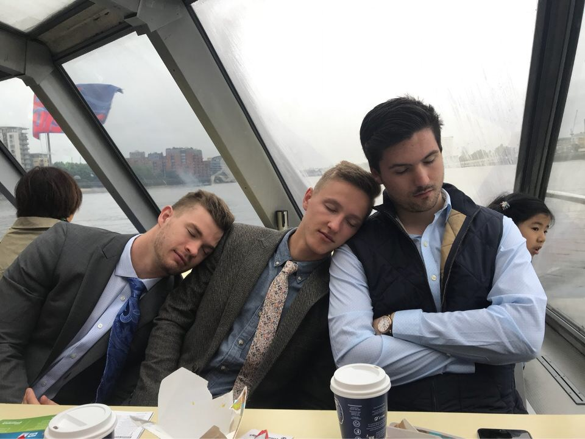

This morning the group put on their finest cruise wear in preparation for a scenic cruise up the Thames River via motor boat. We found our luxury ship dock right near Parliament and, of course, we were first in line. That advantageous position gave us first pick of the seats, and the group choose the front table that seated 12 in luxury leather seating. However, due to the late night before, the overcast skies, and low-humming white noise of the engine, the group was fast asleep even before we weighed anchor. Engle did repeat the information given us on the recorded tape loop, and most disembarked for our 20 minutes stop in Greenwich. The group grabbed lunch and ate onboard during the downriver return.
The Crew's Noble Sleeping Contest

We returned to our Parliament docks and walk the short distance to Westminster Abbey, enjoying the street vendors and entertainers along the way. The gothic style of the Abbey stands is in stark contrast to St. Paul’s! We found Frank, our docent, and began our tour in the Abbey’s cloisters. Frank was an excellent guide, and pointed out lots of interesting details and facts that make this sight one of the most profound in all of London (and we’re not just talking about the seeing oldest door in England). Once inside the Abbey, we strolled past graves of past royals and notable British: Newton, Handel, almost every English poet and musician. We also learned why aristocrats like to place sculpted birds on their tombs (pheasants, chickens, and roosters were quite in style as grave decorations at one time!). And we also learned the plural of “chandelier.”
Our tour was finished well before 5:00pm choral evensong, so the professor allowed us free time with the invitation to return and join him for the service. The group split up; Chase got an English haircut and many returned to Oxford Circus for power shopping. After independent dinners, the group met in Richmond Court 2A to do our daily check-ins and journaling.